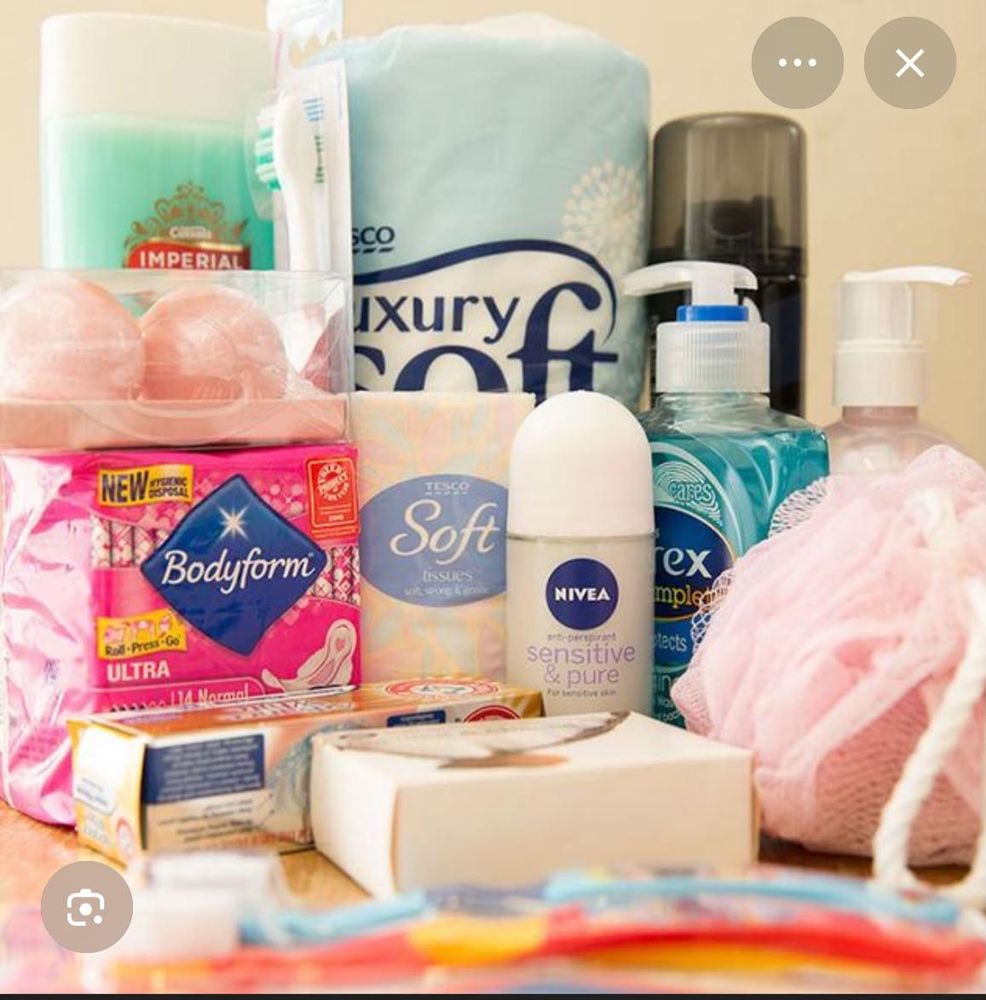
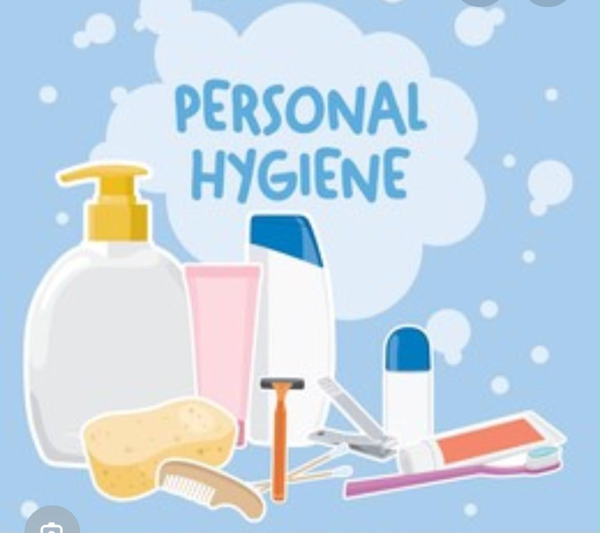
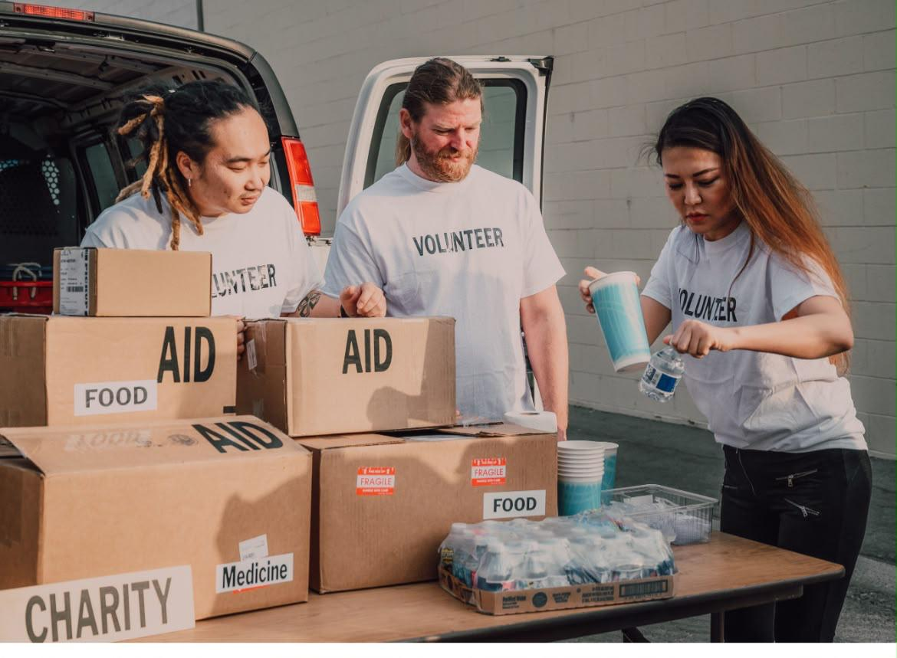

Welcome
Harvest of Hygiene is a Pretoria-based NPO. We fight period poverty in township schools. No girl should miss school because of periods.

Free Packs
R50 per pack with pads, soap, deodorant and tissues.

Workshops
45 workshops in 2025 in Soweto and Tembisa schools.

Volunteers
120 volunteers helping across Pretoria and Gauteng.